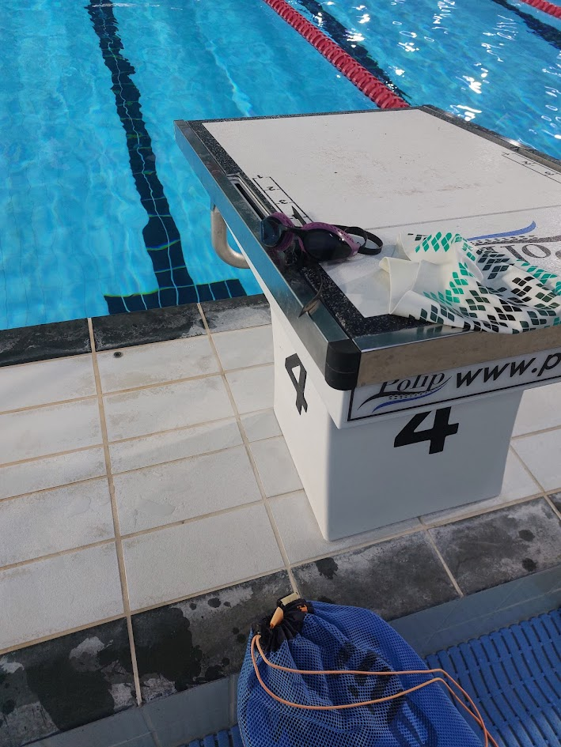
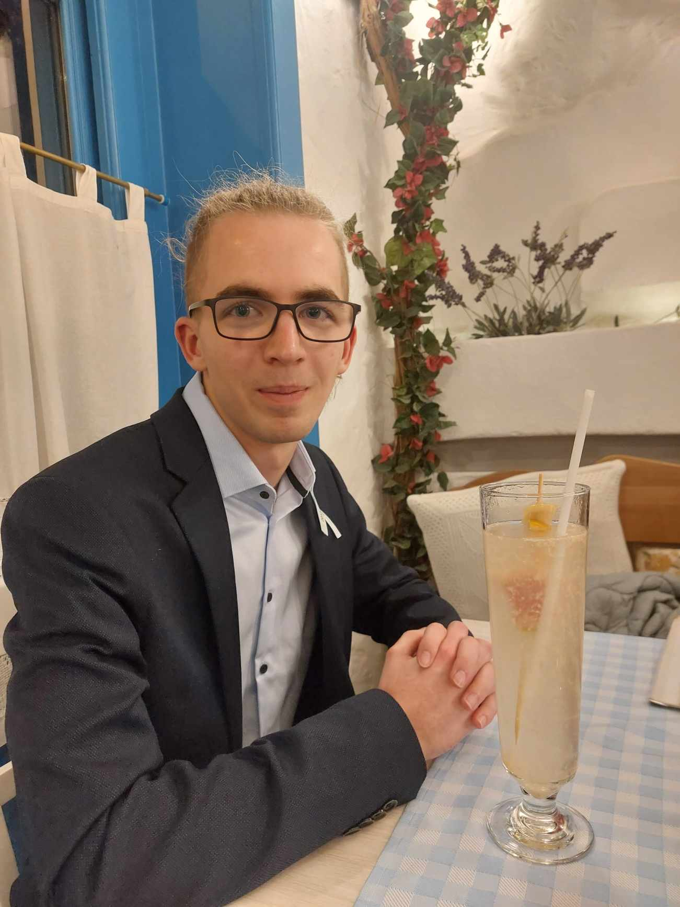
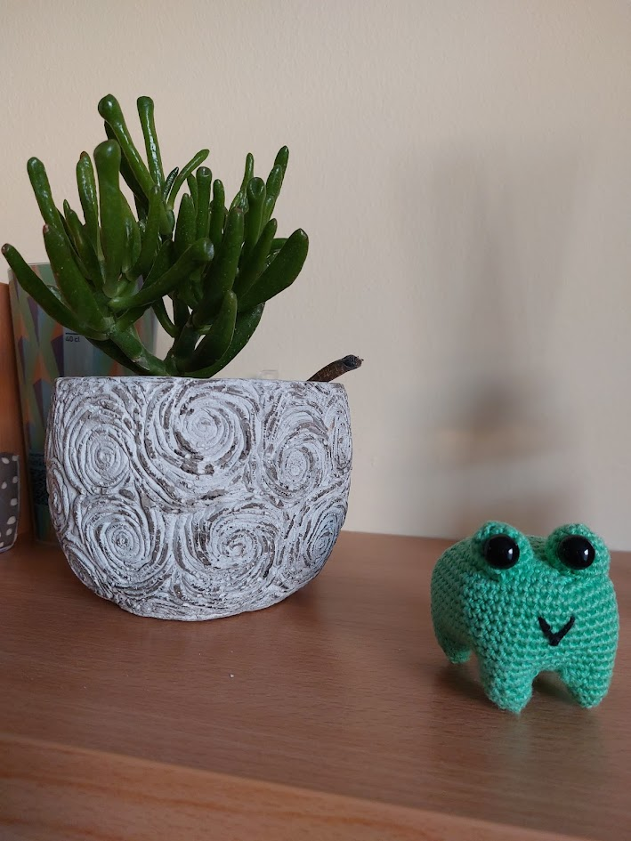

Cseke Boldizsár
Szia! Én Cseke Boldizsár vagyok, egy lelkes egyetemi hallgató a Pannon egyetemen. A célom, hogy kreatív és egyedi megoldásokat hozzak létre, amelyek segítenek a problémák gyors és hatékony megoldásában. Weboldalam egy hely, ahol bemutatom a munkáimat, a projektjeimet, és egy kicsit többet is megosztok magamról. Ha kíváncsi vagy, hogy milyen irányba tartok a szakmámban, és hogyan tudom segíteni a fejlődésed, ne habozz kapcsolatba lépni! Köszönöm, hogy ellátogattál, és remélem, találsz valami inspirálót a weboldalon!